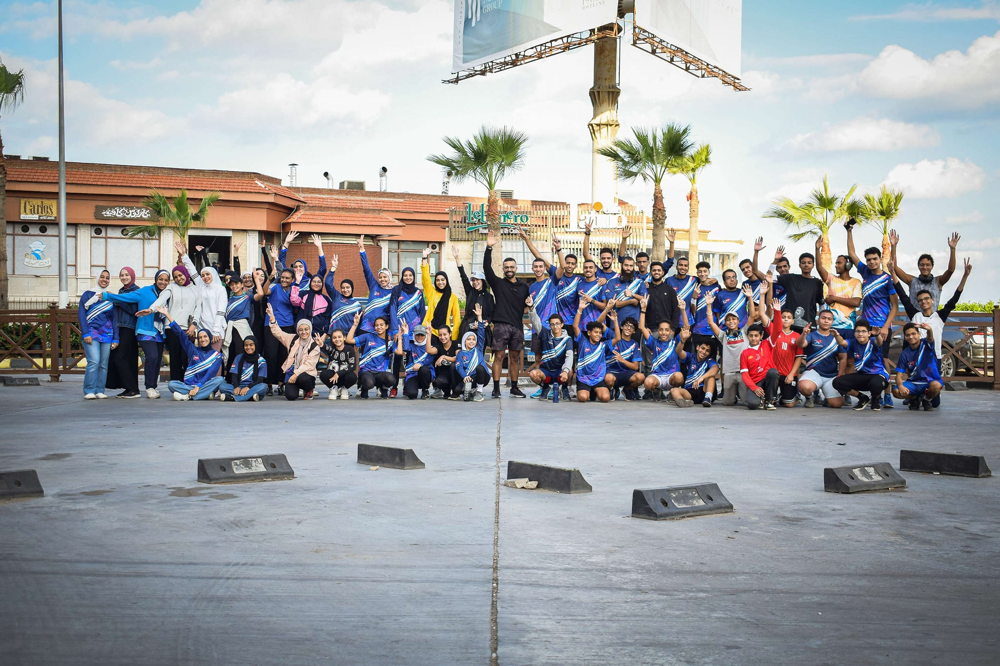

Welcome To Our Team
Tal3een Negry
السلام عليكم ورحمة الله و بركاته إحنا تيم طالعين نجري من إسكندرية بنشجع
صحابنا علي الجري والرياضة 💙 هدفنا اننا نشجع الشباب على الرياضى و انها
تعمل حاجة كويسة و تتعرف على ناس جديدة و تكون عادات كويسة,الموقع دا موقع
تعريفي عن الفريق يعرفك التيم ليدرز و السوشيال ميديا بتاعت الفريق و لو
حابب تشتري التيشيرت و انجازات الفريف و اهدافه تاريخ تأسيس الفريق 💙13/7/2021

Team Activites
حضورنا في سباق زايد الخيري النسخه التاسعه في العاصمة الإدارية الجديدة 💙
بحضور وزير الشباب والرياضة دكتور اشرف صبحي
والفريق الركن محمد هلال الكعبي ، رئيس اللجنه المنظمة العليا لماراثون زايد الخيري من الجانب الإماراتي
وقامات بارزة من كلتا الدولتين الشقيقتين مصر والإمارات ❤️💚
شكرا لكل اللي شباب وبنات الفريق اللي عملوا مجهود خرافي في سباق زي زايد 💙
كل الدعم لكل واحد بيحاول وبيجتهد يغير من نفسه للأحسن 💙✨وجود مشرف للفريق الأزرق زي م اتعودنا 💪 اداء مميز لأفراد الفريق
27/12/2024
مشاركة أبطال فريقنا في سباق المنصورة الجديدة 💙💙💙✨
ووصول سفراء فريقنا الى المنصورة الجديدة في ايڤنت Mansoura Runners في أجواء أوروبية 🥶💙💪
شارك الأبطال في سباق ال10 كيلو في رود اكتر من رائع حقيقي ❤️
و نجاح جديد في كسر الأرقام بفضل الله وحصول ابطالنا على مراكز اولى في السباق 🏁
راجين من الله دوام التوفيق والنجاح لهم ❤️
2/2/2024
نعتز ونفتخر بتكريم لاعبينا وشباب الفريق قلبا وقالبا 💙🏅
في سباق ايڤنت فريق فاميلي ران مسافة ٧ كيلو الجمعة الماضية 💪
اللاعبة البطلة مريم جمال الحاصلة على المركز الاول وبطلة المرحله فئه تحت ٢٠ سنة 🥇
اللاعب البطل زياد شيتوس الحاصل على المركز الثاني فئه تحت ٢٠ سنة 🥈
اللاعبة البطلة سماء محمد الحاصلة على المركز الرابع فئه تحت ٢٠ سنة 🎖️
اللاعبة البطلة ايمان عبدالهادي الحاصلة على المركز الخامس فئه تحت ٢٠ سنة 🎖️
راجين من الله دوام التوفيق والنجاح لهم 💙✨
3/9/2024